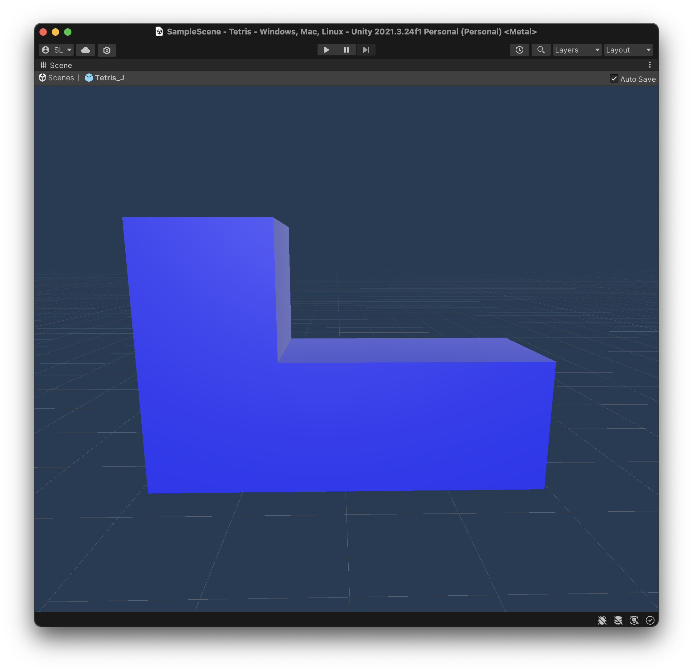
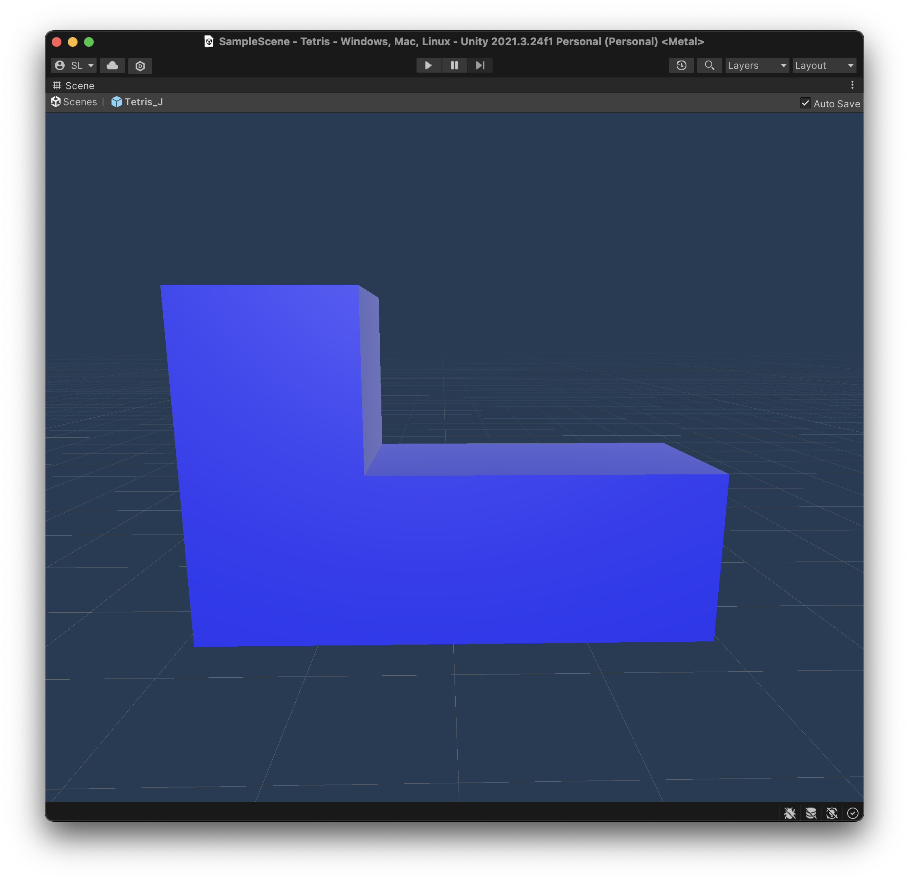
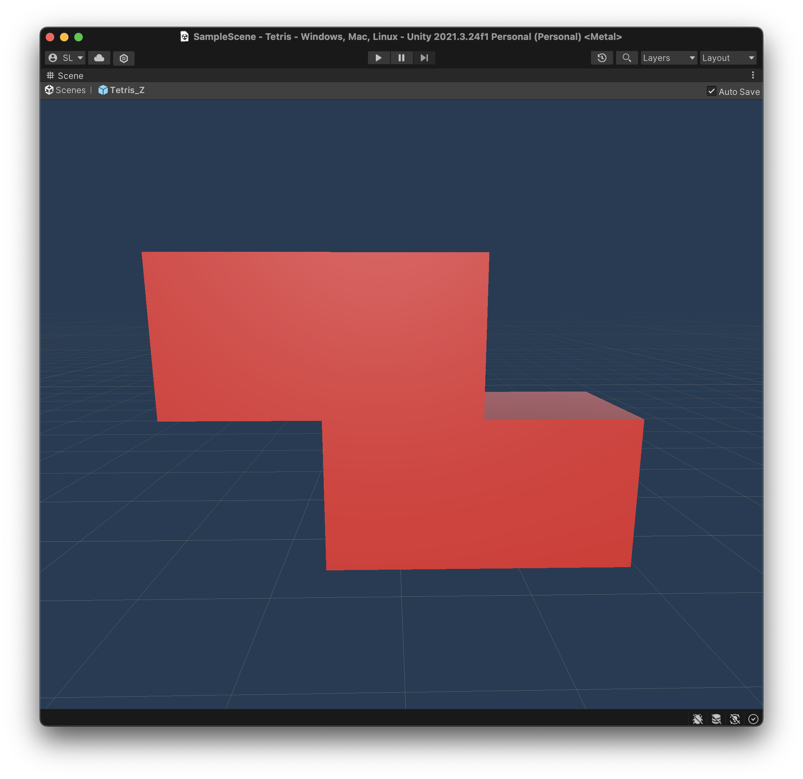
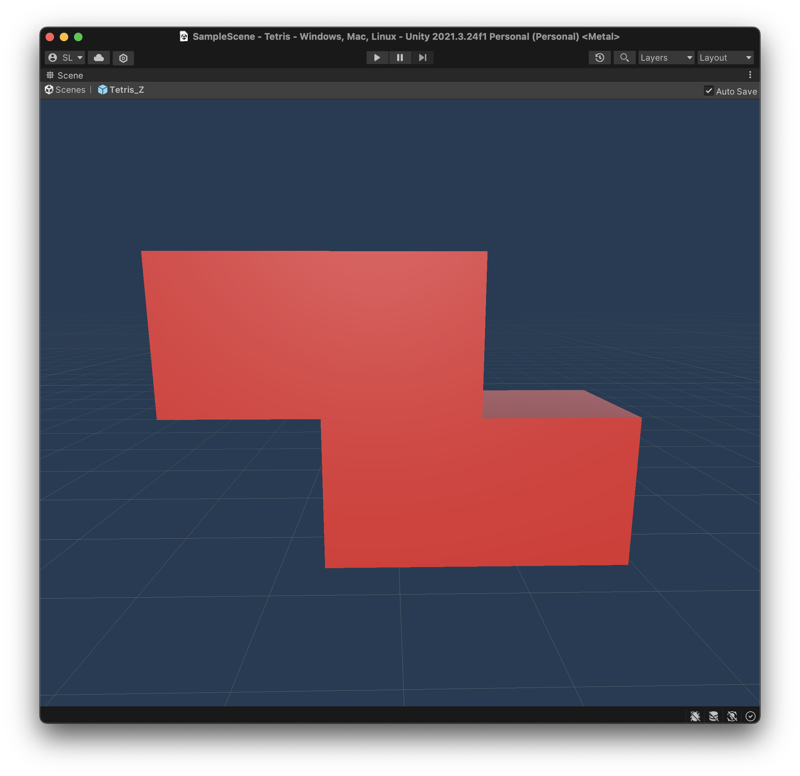

CS 175 Project: Tetris
By Steve Li and Elizabeth Ling
Background
Tetris, a puzzle game created by Soviet Engineer Alexey Pajitnov, has captivated audiences since the 1980s. First starting out on early computers such as the Electronika 60, the game quickly grew in popularity, and practically any device with a screen mostly likely has the capability to run the game. Within this project, we aim to bring the game to the modern medium, a 3D stylized version built using Unity using the concepts learned in class.
Tetris Basics
Rules
The game is rather simple. On a 10x20 grid of squares, players attempt to stack individual pieces, named tetrominoes, on top of each other. Filling an entire row of blocks clears the row of blocks, bringing every other block above it down a row. If the stack of blocks reach the very top, the game ends. Furthermore, as more lines are cleared, the game is sped up. The goal, therefore, is to clear as many rows before the stack reaches the top of the board.
Tetrominoes
A tetromino is a geometric shape composed of 4 squares. In a standard game of tetris, the player is presented with 7 tetrominoes, indicated by the letter the shape draws out: I, L, J, T, O, S, and Z.

 


 

Within our implementation of Tetris, we created the 3D models of each piece ourselves, and then applied a color material that matched that of the standard Tetris color sceheme.
The key compnonent of tetrominoes lies in the rotation system. In the Super Rotation System, or SRS, the current Tetris standard for how tetrominoes behave when rotated, the following rules are in place, taken from the Tetris wiki:
- When unobstructed, the tetrominoes all appear to rotate purely about a single point. These apparent rotation centers are shown as circles in the diagram.
- It is a pure rotation in a mathematical sense, as opposed to the combination of rotation and translation found in other systems such as Sega Rotation and Atari Rotation.
- For the I and O tetrominoes, the apparent rotation center is at the intersection of gridlines, whereas for the J, L, S, T and Z tetrominoes, the rotation center coincides with the center of one of the four constituent blocks.

The rotation states of all 7 tetrominioes according to SRS
Our rotation system attempted to emulate SRS as best as possible, placing the rotation point towards the center of the piece. With the I and O tetrominoes, we simply disabled rotation of the O piece, and the I piece we chose a block close to the center as the rotation point.

The pivot point of the I piece.
DAS and ARR
Another component of tetrominioes lies in their movement, also known as finesse in the Tetris community. Two settings are commonly used in most Tetris ports, known as DAS and ARR. DAS stands for Delayed Auto Shift, and represents the delay in which a piece will move when the player continues to hold a key. On the other hand, ARR stands for Auto Repeat Rate, which means the rate at which pieces move in their intended direction. Both of these were implemented and are tuneable with individual parameters in our C# scripts, allowing for players to adjust their piece handling capabilities.